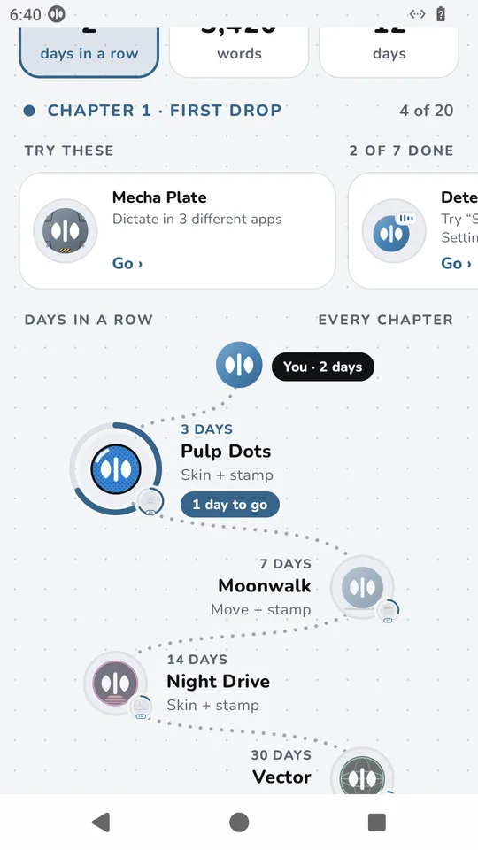
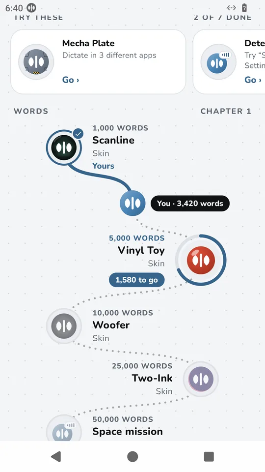
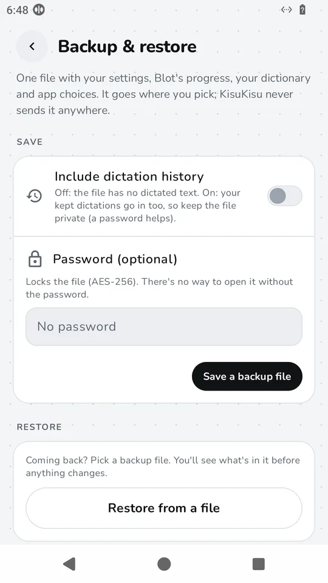
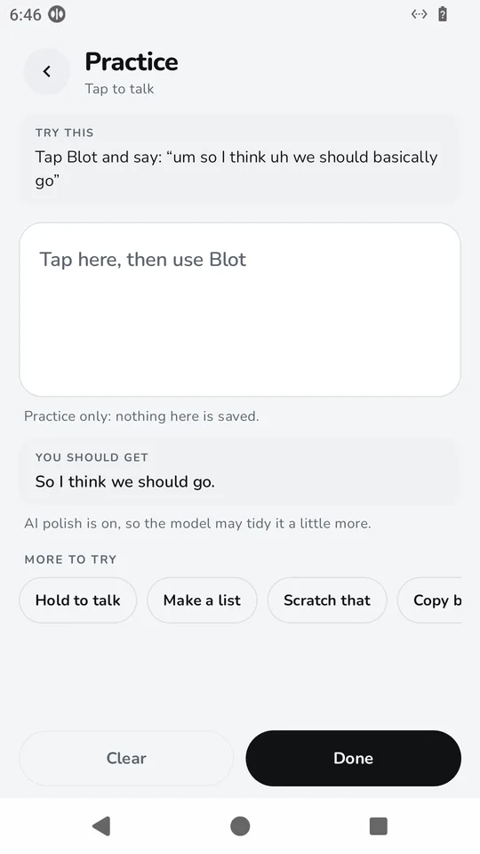

Version 1.4.0
What's new in KisuKisu 1.4
Talk more, unlock more
Everything is free. You earn skins, voices, moves and stamps just by dictating: try a feature, build a streak, pass a word count. Nothing is taken away, and your progress stays on your phone.


The first drop has nine skins. A skin restyles the floating bubble and the Blot at the top of Home. It never changes how the bubble moves.
Your journey
One screen for how far you've come, in chapters: words, days in a row and the things you've tried. Streaks forgive a missed day, with a freeze earned each week and a one-time repair. There is no guilt when one ends.


And more
Blot lingers
After the keyboard closes, Blot stays a moment and then leaves with its own exit. It steps out of the way in full-screen video, games and the camera.
A practice box
Try every feature on a safe screen. Nothing you say in it is saved.
On or off, per app
Turn Blot off in the apps where you don't want it, and keep it everywhere else.
Backup and restore
Save your settings, progress and dictionary to a file you choose. History is optional and the file can have a password.
Tighter privacy
Recordings are deleted as soon as your text lands, and the app's logs keep none of your words.
A smaller cleanup model
KisuKisu Cleanup is about 149 MB, trained for tidying dictation. It is based on Liquid AI LFM2.5 (LFM Open License v1.0).
Backup, without the cloud


Android's own automatic backup now carries only settings, rewards progress, per-app choices and the dictionary, never your history, keys, audio or models.
Questions
Is everything in 1.4 free?
Yes. Skins, voices, moves and secrets are all free. You earn them by using KisuKisu, there is nothing to buy, and nothing you have earned is ever taken away.
Does my progress leave my phone?
No. Your journey, streaks and rewards stay on the phone. Nothing is sent anywhere.
Do skins change how KisuKisu works?
No. A skin only changes how the floating bubble and the Blot at the top of Home look. The app inside keeps the accent colour you chose.
Can I turn Blot off in some apps?
Yes. 1.4 lets you turn the bubble on or off for each app.
What does the backup contain?
Your settings, rewards progress, per-app choices and dictionary. Dictation history is optional and you choose it. You can add a password. The file goes where you save it, and KisuKisu never sends it anywhere.
How do I get KisuKisu?
KisuKisu is in closed testing on Google Play. Fill in the short form with the Google account you use in the Play Store. We add you, usually within a day, and you install it from Google Play.
See 1.4 for yourself.
KisuKisu is in closed testing on Google Play. It's free. Android only for now.
- Fill in a short form with the Google account you use in the Play Store.
- We add you as a tester, usually within a day.
- Install KisuKisu from Google Play like any other app.